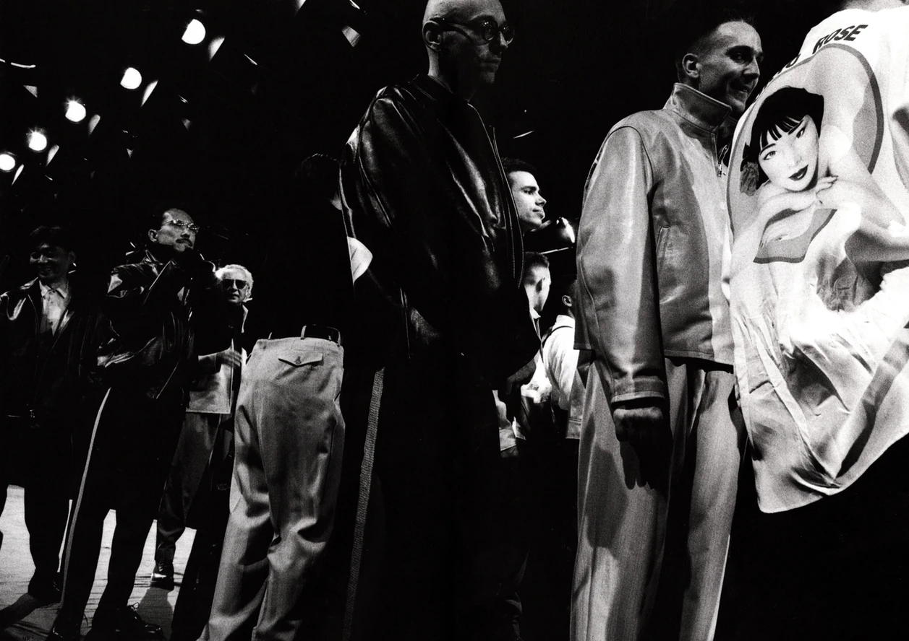

Yohji Yamamoto Fall/Winter 1991: “6.1 The Men's Collection"

Yohji Yamamoto's 6.1 The Men's Collection" from 1991 is a transformative and iconic moment in the world of fashion. This collection marked a significant milestone in Yohji Yamamoto's career and had a lasting impact on fashion history.